Robotic Barnacle Nauplius Model
Project Overview
Developed for collaborators in the Quantitative Plankton Ecology Lab at University of Washington, Seattle. Designed to replicate locomotion of micro-scale zooplankton for hydrodynamic force testing at similar Reynolds numbers. Expected lab testing in Winter 2026-2027. Submitted for membership to Sigma Xi. Further applications include exoplanetary exploration robotics and other viscous medium exploration.
Chan Lab: karenchanlab.org/research
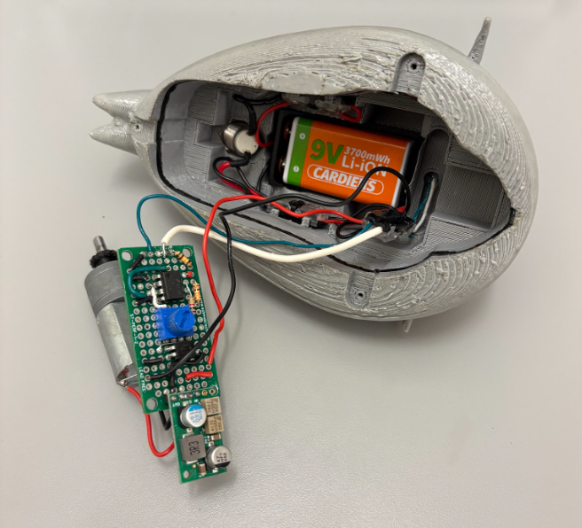
Carapace and Electrical Circuit
The protoboard and battery are integrated beneath a biologically accurate carapace with mounting for the phototransistor. The hole at bottom right provides mounting for an arming switch which prevents unintentional burning of current to ground through the reference voltage divider. A 9V battery cage is screwed into place using the standoffs visible in the interior. M2 screw holes manage attachment of the base to the carapace, completing the robot. Waterproofing is provided by high infill 3D printing, an O-ring running the perimeter of the interface, and a rubber sealant spray on the exterior. A removable waterproof plug allows the battery to be charged with a USB-C cable for ease of access.
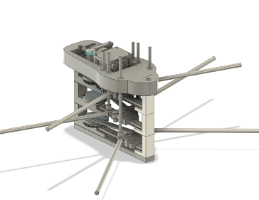
Base and Mechanical Mechanism
The locomotion is a periodic stroke pattern of oar-like appendages, which is replicated by 3 sets of metal arms. The arms consist of a hollow outer tube that extends from the pivot position outwards, and a smaller hollow inner tube that pivots within the outer shell. This was done to minimize any piston effects when moving in a viscous fluid. The mechanical assembly consists of three modules set in the base, each module consisting of a gear with a topper, an arm, and a slider. These are modular and they can be stacked in any order to study out of plane motion effects. The phase of each module is set by the relative position of the peg on the gear, which have been set to π/4 and π/2 radians out of phase from the normal. The motor drives all of the modules through a bevel gear set in a bearing at the top of the base.
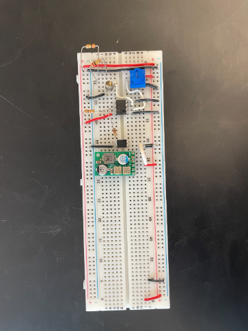
Circuit Development
A light activation circuit was chosen for control of the model, due to the ease of remote access once placed in situ with sensitive hydrodynamic sensors. The light activation circuit consists of an LM311 comparator, BPW77NA phototransistor, IRLD120 MOSFET, and UVLO voltage regulator. Voltage across the phototransistor changes due to ambient light conditions, which is compared to the threshold activation voltage. The threshold itself is adjustable with a potentiometer between 9V and GND. Our chosen regulator provides both undervoltage lockout and overvoltage protection to ensure consistent speed during testing. Further work may examine the feasibility of a digital microcontroller on board, but space constraints and BLE attenuation through fluid media make this challenging.
At left: Circuit testing on a breadboard to tune resistor values and ensure accurate switching.
At right: Circuit integrated on protoboard with header pins for voltage regulator and potentiometers to adjust voltage lockout/output.
Below: Preliminary KiCad model of PCB of circuit.
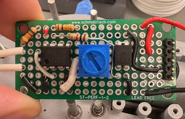
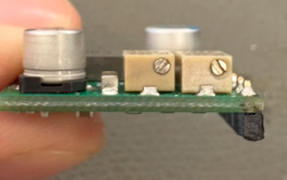
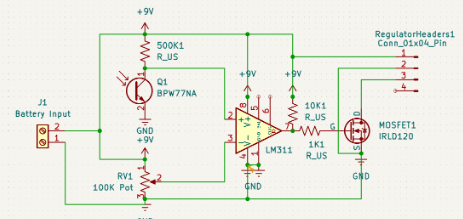
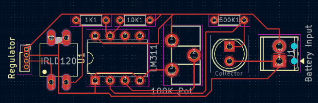
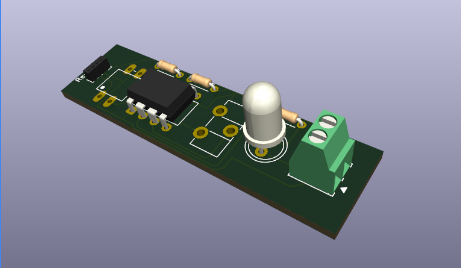
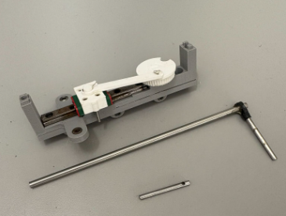
Mechanical Development
The mechanical component consists of sets of modules. Each module handles the motion of a single appendage pair, moving about a fixed pivot point to replicate the angular sweep of its respective biological counterpart. The calculations for these pivot points are shown below, along with a Desmos based visual calculator that I made. The angular sweep of each appendage set was gathered from video provided by our collaborators at UW, and the data/setup is displayed below. The pivot position of each arm set is set in a bearing and integrated into each module. This is an improvement over the previous iterations, which required a stand reaching all the way to the base of the mechanism. This long arm created large error in the position of the pivot, and also prevented free ordering of the modules as the sweep of one set may clip into the pivot arm of another. A strand of wire set through pins in the slider and the gear topper hold the assembly together in an easily removable and low-profile manner.
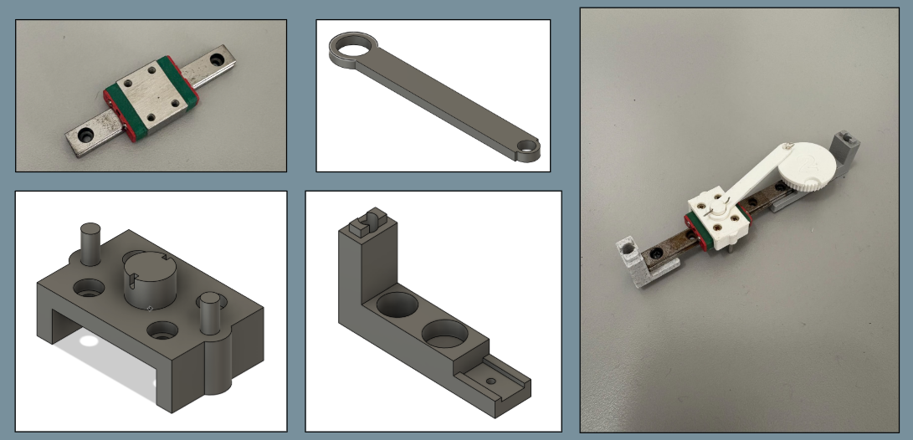
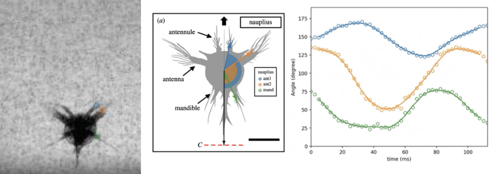
Description text goes here.
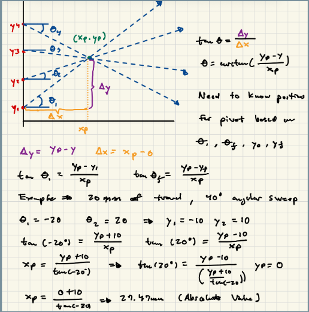